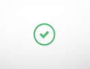

Esta seção contém as tabelas de exemplo utilizadas no projeto. Esta seção contém as tabelas de exemplo utilizadas no projeto. Esta seção contém as tabelas de exemplo utilizadas no projeto. Esta seção contém as tabelas de exemplo utilizadas no projeto. Esta seção contém as tabelas de exemplo utilizadas no projeto. Esta seção contém as tabelas de exemplo utilizadas no projeto.

Esta seção contém as tabelas de exemplo utilizadas no projeto. Esta seção contém as tabelas de exemplo utilizadas no projeto. Esta seção contém as tabelas de exemplo utilizadas no projeto.Esta seção contém as tabelas de exemplo utilizadas Esta seção contém as tabelas de exemplo utilizadas no projeto.no projeto. Esta seção contém as tabelas de exemplo utilizadas no projeto.Esta seção contém as tabelas de exemplo utilizadas no projeto.Esta seção contém as tabelas de exemplo utilizadas no projeto. Esta seção contém as tabelas de exemplo utilizadas no projeto.Esta seção contém as tabelas de exemplo utilizadas no projeto. Esta seção contém as tabelas de exemplo utilizadas no projeto.Esta seção contém as tabelas de exemplo utilizadas no projeto. Esta seção contém as tabelas de exemplo utilizadas no projeto.Esta seção contém as tabelas de exemplo utilizadas no projeto. Esta seção contém as tabelas de exemplo utilizadas no projeto.Esta seção contém as tabelas de exemplo utilizadas no projeto.Esta seção contém as tabelas de exemplo utilizadas no projeto.Esta seção contém as tabelas de exemplo utilizadas no projeto.
| ID | NOME | CIDADE | ||
|---|---|---|---|---|
| linha 1, celula 1 | linha 1, celula 2 | linha 1, celula 3 | ||
| linha 2, celula 1 | linha 2, celula 2 | linha 2, celula 3 | ||
| linha 3, celula 1 | linha 3, celula 2 | linha 3, celula 3 | ||
| Tabela de exemplo | ||||
| Bill Gates | Telefone | |
|---|---|---|
| 555 77 854 | 555 77 855 | |